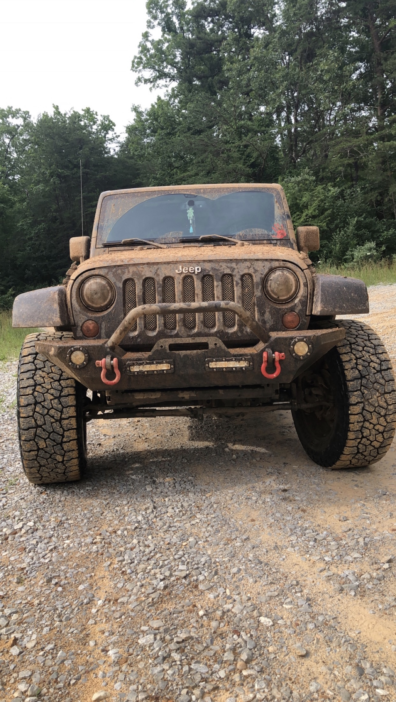

Welcome to Jeep Wranglers
I have owned a Jeep Wranger since I was 15. There are many things I was facinated by before owning one. I liked that there are many different options in customizing a Wranger and that there is an option for removing the top and doors, but also having them on for a safer ride. I have always found offraoding an interesting thing that I've always wanted to experience in a Jeep Wrangler. Throughout my life I have had family members own a Jeep Wranger as well and have always been a fan of them myself.
After owning my Jeep Wrangler for about a year I started looking into lifting it and putting bigger tires on it so that I was able to customize it to my liking. When I decided to customize my Wrangler there are also other things I had to look into before making the decison to do so. There are other things that have to be changed along the way so that the Wranger is able to drive like the stock Wrangler. I have learned so much about Jeep Wranglers that I didn't know about before purchasing it, but as I learn, the better I am at fixing any issues that are to come so that I am able to maintain my Jeep Wrangler without any issue.
